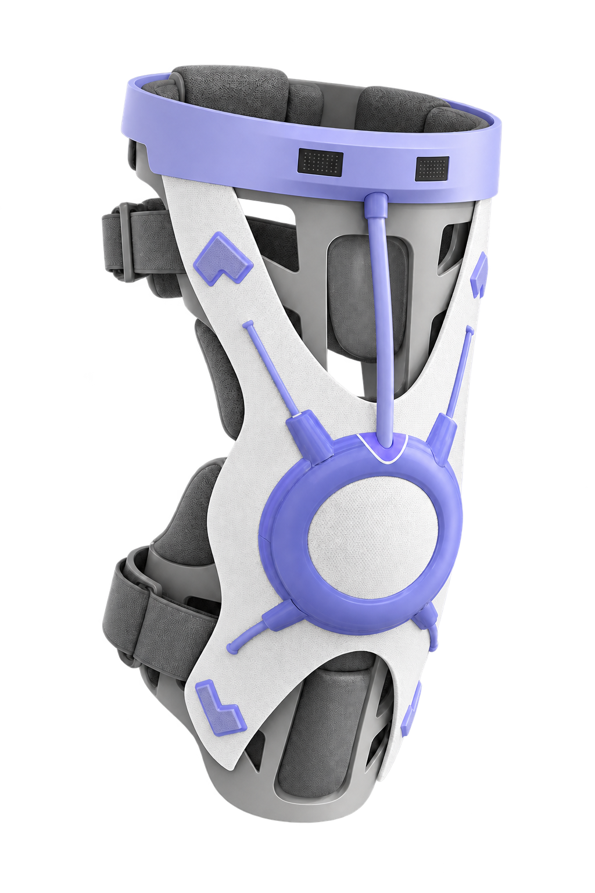
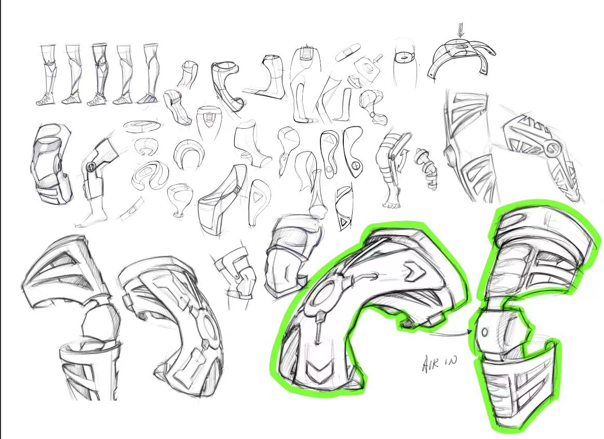
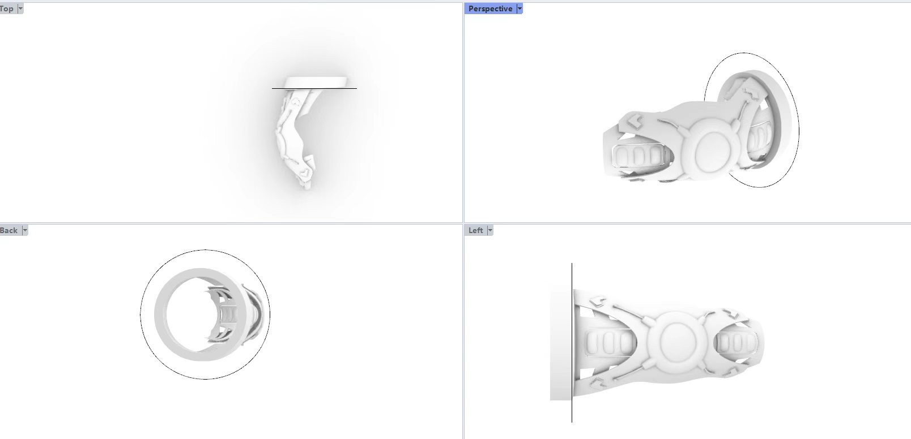
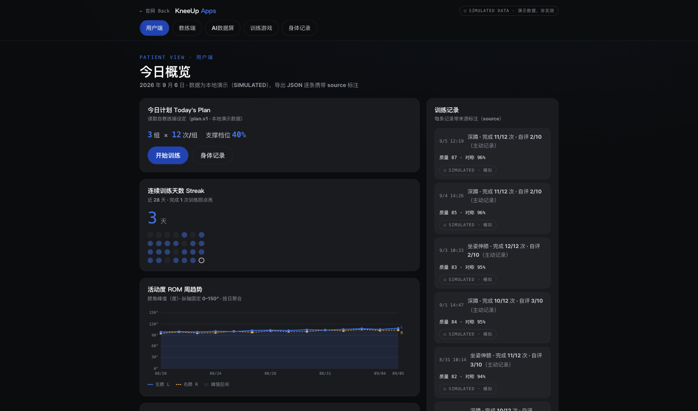

2026 · HACKATHON / WEARABLE CONCEPT
KneeUp
Designing around movement.
A wearable knee support concept and interaction prototype exploring the connection between physical movement and understandable feedback.
Team project · Motion structure concept & promotional video
I developed the I-shaped motion concept for the knee support and created the project’s promotional video.

PROJECT FILM
The concept, in motion.
The film presents the design concept and exploratory prototype work; it does not establish medical effectiveness.
01 / DESIGN PROBLEM
Support that considers
the experience of moving.
The team’s project explores knee support and at-home training. The design challenge connects a wearable form around a moving joint with an interface that makes training information easier to understand. The work shown here remains at concept and prototype stage.
02 / FORM & MOTION STRUCTURE
An I-shaped
motion concept.
My contribution was the I-shaped motion structure concept for the knee support. The project’s original sketches and CAD views below show the wider form exploration and arrangement around the knee; they are team project material.




03 / INTERACTION PROTOTYPE
Make the session
easier to follow.
The team’s web demo presents a daily plan, training records and movement trends. The captured interface uses simulated data to demonstrate the interaction flow. It is shown as project context, separate from my motion concept and video contributions.


04 / MY CONTRIBUTION
Motion concept
I developed the I-shaped motion concept for the knee support as part of the team’s wearable design work.
Promotional video
I created the promotional video presented above to communicate the project’s product concept and prototype work.